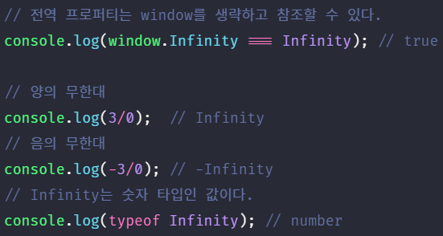

1. 자바스크립트 객체의 분류 #
자바스크립트 객체는 아래와 같이 크게 3개의 객체로 분류할 수 있다.
- 표준 빌트인 객체
표준 빌트인 객체(standard built-in objects / native objects / global objects)는 ECMAScript 사양에 정의된 객체를 말하며 애플리케이션 전역의 공통 기능을 제공한다. 표준 빌트인 객체는 ECMAScript 사양에 정의된 객체이므로 자바스크립트 실행 환경(브라우저 또는 Node.js 환경)과 관계없이 언제나 사용할 수 있다. 표준 빌트인 객체는 전역 객체의 프로퍼티로서 제공된다. 따라서 별도의 선언없이 전역 변수처럼 언제나 참조할 수 있다. - 호스트 객체
호스트 객체는 ECMAScript 사양에 정의되어 있지 않지만 자바스크립트 실행 환경에서 추가적으로 제공하는 객체를 말한다. 브라우저 환경에서는 DOM, BOM, Canvas, XMLHttpRequest, fetch, requestAnimationFrame, SVG, Web Storage, Web Component, Web worker와 같은 클라이언트 사이드 Web API를 호스트 객체로 제공하고 Node.js 환경에서는 Node.js 고유의 API를 호스트 객체로 제공한다. - 사용자 정의 객체
사용자 정의 객체는 표준 빌트인 객체와 호스트 객체처럼 기본 제공되는 객체가 아닌 사용자가 직접 정의한 객체를 말한다.
2. 표준 빌트인 객체 #
자바스크립트는 Object, String, Number, Boolean, Symbol, Date, Math, RegExp, Array, Map/Set, WeakMap/WeakSet, Function, Promise, Reflect, Proxy, JSON, Error 등 40여개의 표준 빌트인 객체를 제공한다.
Math, Reflect, JSON을 제외한 표준 빌트인 객체는 모두 인스턴스를 생성할 수 있는 생성자 함수 객체이다. 생성자 함수 객체인 표준 빌트인 객체는 프로토타입 메소드와 정적 메소드를 제공하고 생성자 함수 객체가 아닌 표준 빌트인 객체는 정적 메소드만을 제공한다.
예를 들어 표준 빌트인 객체인 String, Number, Boolean, Function, Array, Date는 생성자 함수로 호출하여 인스턴스를 생성할 수 있다.

생성자 함수인 표준 빌트인 객체가 생성한 인스턴스의 프로토타입은 표준 빌트인 객체의 prototype 프로퍼티에 바인딩된 객체이다. 예를 들어 표준 빌트인 객체인 String을 생성자 함수로서 호출하여 생성한 String 인스턴스의 프로토타입은 String.prototype이다.
표준 빌트인 객체의 prototype 프로퍼티에 바인딩된 객체(예를 들어, String.prototype)는 다양한 기능의 메소드를 제공한다. 또한 인스턴스 없이도 호출 가능한 정적 메소드도 제공한다.
예를 들어 표준 빌트인 객체인 Number를 생성자 함수로 호출하여 생성한 Number 인스턴스는 Number.prototype이 제공하는 다양한 기능의 프로토타입 메소드를 사용할 수 있다.
3. 원시 값과 래퍼 객체 #
문자열이나 숫자, 불리언 등의 원시 값이 있음에도 불구하고 문자열, 숫자, 불리언 객체를 생성하는 String, Number, Boolean 등의 표준 빌트인 생성자 함수가 존재하는 이유는 무엇일까?
아래 예제를 살펴보자. 원시 값은 객체가 아니므로 프로퍼티나 메소드를 가질 수 없음에도 불구하고 원시 값인 문자열이 마치 객체처럼 동작한다.
표준 빌트인 객체가 제공하는 프로토타입 메소드를 사용하려면 반드시 인스턴스를 생성하고 인스턴스로 프로토타입 메소드를 호출해야 한다. 그런데 위 예제를 살펴보면 원시 값으로 표준 빌트인 객체의 프로토타입 메소드를 호출하면 정상적으로 동작한다.
이는 원시값인 문자열, 숫자, 불리언 값의 경우, 마치 객체처럼 이들 원시 값에 대해 마침표 표기법(또는 대괄호 표기법)으로 접근하면 자바스크립트 엔진이 일시적으로 원시 값을 연관된 객체로 변환해 주기 때문이다. 즉, 원시 값을 객체처럼 사용하면 자바스크립트 엔진은 암묵적으로 연관된 객체를 생성하고 생성된 객체로 프로퍼티에 접근하거나 메소드를 호출하고 다시 원시 값으로 되돌린다.
이처럼 문자열, 숫자, 불리언 값에 대해 객체처럼 접근하면 생성되는 임시 객체를 레퍼 객체라 한다.
예를 들어, 문자열에 대해 마침표 표기법으로 접근하면 그 순간 레퍼 객체인 String 생성자 함수의 인스턴스가 생성되고 문자열은 레퍼 객체의 [[StringData]] 내부 슬롯에 할당된다.
이때 문자열 레퍼 객체인 String 생성자 함수의 인스턴스는 String.prototype의 메소드를 상속받아 사용할 수 있다.

그 후, 레퍼 객체의 처리가 종료하면 레퍼 객체의 [[StringData]] 내부 슬롯에 할당된 원시값을 되돌리고 레퍼 객체는 가비지 컬렉션의 대상이 된다. 아래 예제를 살펴보자.
① 식별자 str은 문자열을 값으로 가지고 있다. ② 식별자 str은 레퍼 객체를 가리킨다. ③ 식별자 str은 다시 원래의 문자열, 즉 레퍼 객체의 [[StringData]] 내부 슬롯에 할당된 원시값을 갖는다. ④ 식별자 str은 새로운(②에서 생성한 래퍼 객체와는 다른) 레퍼 객체를 가리킨다. ⑤ 식별자 str은 다시 원래의 문자열, 즉 레퍼 객체의 [[StringData]] 내부 슬롯에 할당된 원시값을 갖는다.
숫자도 마찬가지다. 숫자에 대해 마침표 표기법으로 접근하면 그 순간 레퍼 객체인 Number 생성자 함수의 인스턴스가 생성되고 숫자는 레퍼 객체의 [[NumberData]] 내부 슬롯에 할당된다. 이때 레퍼 객체인 Number 객체는 당연히 Number.prototype의 메소드를 상속받아 사용할 수 있다. 그 후, 레퍼 객체의 처리가 종료하면 레퍼 객체의 [[NumberData]] 내부 슬롯에 할당된 원시값을 되돌리고 레퍼 객체는 가비지 컬렉션의 대상이 된다.
불리언 값도 문자열이나 숫자와 마찬가지이지만 불리언 값으로 메소드를 호출할 일은 없으므로 그다지 유용하지는 않다.
ES6에서 새롭게 도입된 원시값인 심볼도 레퍼 객체를 생성한다. 심볼은 일반적인 원시값과는 달리 리터럴 표기법으로 생성할 수 없고 Symbol 함수를 통해 생성해야 하므로 다른 원시값과는 차이가 있다. 심볼에 대해서는 28장에서 자세히 살펴보도록 하자.
이처럼 문자열, 숫자, 불리언, 심볼은 암묵적으로 생성되는 레퍼 객체에 의해 마치 객체처럼 사용할 수 있으며 표준 빌트인 객체인 String, Number, Boolean, Symbol의 프로토타입 메소드 또는 프로퍼티를 참조할 수 있다. 따라서 String, Number, Boolean 생성자 함수를 new 연산자와 함께 호출하여 문자열, 숫자, 불리언 인스턴스를 생성할 필요가 없으며 권장하지도 않는다. Symbol은 생성자 함수가 아니므로 이 논의에서는 제외하도록 한다.
문자열, 숫자, 불리언, 심볼 이외의 원시값, 즉 null과 undefined는 레퍼 객체를 생성하지 않는다. 따라서 null과 undefined 값을 객체처럼 사용하면 에러가 발생한다.
4. 전역 객체 #
전역 객체는 코드가 실행되기 이전 단계에 자바스크립트 엔진에 의해 어떤 객체보다도 먼저 생성되는 특수한 객체이며 어떤 객체에도 속하지 않은 최상위 객체이다.
전역 객체는 자바스크립트 환경에 따라 지칭하는 이름이 제각각이다. 브라우저 환경에서는 window(또는 self, this, frames)가 전역 객체를 가리키지만 Node.js 환경에서는 global이 전역 객체를 가리킨다.
- globalThis
- 2019년 12월 현재, 전역 객체를 가리키는 식별자를 globalThis로 통일하는 제안이 stage 4에 올라와 있다. globalThis는 크롬 71, 파이어폭스 65, 사파리 12.1, Edge 79, Node.js 12.0.0 이상에 이미 구현되어 있다.
전역 객체는 표준 빌트인 객체(Object, String, Number, Function, Array…)들과 환경에 따른 호스트 객체(클라이언트 web API 또는 Node.js의 호스트 API) 그리고 var 키워드로 선언한 전역 변수와 전역 함수를 프로퍼티로 갖는다.
즉, 전역 객체는 계층적 구조 상 어떤 객체에도 속하지 않은 모든 빌트인 객체(표준 빌트인 객체와 호스트 객체)의 최상위 객체이다. 전역 객체가 최상위 객체라는 것은 프로토타입 상속 관계 상에서 최상위 객체라는 의미가 아니고 객체의 계층적 구조 상 표준 빌트인 객체와 호스트 객체를 프로퍼티로 소유한다는 것을 말한다.
전역 객체의 특징은 아래와 같다.
- 전역 객체는 개발자가 의도적으로 생성할 수 없다. 즉, 전역 객체를 생성할 수 있는 생성자 함수가 제공되지 않는다.
- 전역 객체의 프로퍼티를 참조할 때 window(또는 global)를 생략할 수 있다.
- 전역 객체는 Object, String, Number, Boolean, Function, Array, RegExp, Date, Math, Promise와 같은 모든 표준 빌트인 객체를 프로퍼티로 가지고 있다.
- 자바스크립트 실행 환경에 따라 추가적으로 프로퍼티와 메소드를 갖는다. 브라우저 환경에서는 DOM, BOM, Canvas, XMLHttpRequest, fetch, requestAnimationFrame, SVG, Web Storage, Web Component, Web worker와 같은 클라이언트 사이드 Web API를 호스트 객체로 제공하고 Node.js 환경에서는 Node.js 고유의 API를 호스트 객체로 제공한다.
- var 키워드로 선언한 전역 변수와 선언하지 않은 변수에 값을 할당한 암묵적 전역 그리고 전역 함수는 전역 객체의 프로퍼티가 된다.
- let이나 const 키워드로 선언한 전역 변수는 전역 객체의 프로퍼티가 아니다. 즉, window.foo와 같이 접근할 수 없다. let이나 const 키워드로 선언한 전역 변수는 보이지 않는 개념적인 블록(전역 렉시컬 환경의 선언적 환경 레코드) 내에 존재하게 된다.
- 브라우저 환경의 모든 자바스크립트 코드는 하나의 전역 객체 window를 공유한다. 여러 개의 script 태그를 통해 자바스크립트 코드를 분리하여도 하나의 전역 객체 window를 공유하는 것은 변함이 없다. 이는 분리되어 있는 자바스크립트 코드가 하나의 전역을 공유한다는 의미이다.
전역 객체는 몇가지 프로퍼티와 메소드를 가지고 있다. 전역 객체의 프로퍼티와 메소드는 전역 객체를 가리키는 식별자, 즉 window나 global을 생략하여 참조/호출할 수 있으므로 전역 변수와 전역 함수처럼 사용할 수 있다. 이에 대해 살펴보
4.1. 빌트인 전역 프로퍼티 #
빌트인 전역 프로퍼티는 전역 객체의 프로퍼티를 의미한다. 주로 애플리케이션 전역에서 사용하는 값을 제공한다.
4.1.1. Infinity #
Infinity 프로퍼티는 양/음의 무한대를 나타내는 숫자값 Infinity를 갖는다.

4.1.2. NaN #
NaN 프로퍼티는 숫자가 아님을 나타내는 숫자값 NaN을 갖는다. NaN 프로퍼티는 Number.NaN 프로퍼티와 같다.
4.1.3. undefined #
undefined 프로퍼티는 원시 타입 undefined를 값으로 갖는다.
4.2. 빌트인 전역 함수 #
빌트인 전역 함수는 애플리케이션 전역에서 호출할 수 있는 빌트인 함수로서 전역 객체의 메소드이다.
4.2.1. eval #
문자열 형태로 매개변수에 전달된 코드를 런타임에 동적으로 평가하고 실행하여 결과값을 반환한다. 전달된 문자열 코드가 여러 개의 문으로 이루어져 있다면 모든 문을 실행 후 마지막 결과값을 반환한다.
전달된 문자열 코드가 여러 개의 문으로 이루어져 있다면 모든 문을 실행 후 마지막 결과값을 반환한다.
eval 함수는 런타임에 자신이 호출된 기존의 스코프를 동적으로 수정한다. 아래 예제를 살펴보자.
위 예제의 eval 함수는 새로운 변수를 선언하면서 foo 함수의 스코프에 선언된 변수를 동적으로 추가한다. eval 함수가 호출되는 시점에는 이미 foo 함수의 스코프가 존재한다. 따라서 eval 함수는 기존의 스코프를 동적으로 수정하는 것이다. 그리고 eval 함수에 전달된 코드는 이미 그 위치에 존재하던 코드처럼 동작한다. 즉, eval 함수가 호출된 foo 함수의 스코프에서 실행된다.
자바스크립트는 렉시컬 스코프를 따르므로 스코프는 함수 정의가 평가되는 시점에 결정된다. 다시 말해 스코프는 런타임에 결정되는 것이 아니다. 하지만 eval 함수는 런타임에 기존의 스코프를 동적으로 수정할 수 있다. 다시 말해 eval 함수는 렉시컬 스코프를 동적으로 수정할 수 있다. 하지만 성능적인 면에서 손해를 감수해야 한다.
엄격 모드(strict mode)에서 eval 함수는 기존의 스코프를 수정하지 않고 자신만의 독자적인 스코프를 생성한다.
또한 eval 함수에 전달한 변수 선언문이 let, const 키워드를 사용했다면 엄격 모드가 적용된다.
eval 함수를 통해 사용자로부터 입력 받은 콘텐츠(untrusted data)를 실행하는 것은 보안에 매우 취약하다. 또한 자바스크립트 엔진에 의해 최적화가 수행되지 않으므로 일반적인 코드 실행에 비해 처리 속도가 느리다. 따라서 eval 함수의 사용은 가급적 금지되어야 한다.
4.2.2. isFinite #
매개 변수에 전달된 값이 정상적인 유한수인지 검사하여 그 결과를 불리언 타입으로 반환한다. 매개변수에 전달된 값이 숫자가 아닌 경우, 숫자로 타입을 변환한 후 검사를 수행한다.
isFinite(null)은 true를 반환한다. 이것은 null을 숫자로 변환하여 검사를 수행하였기 때문이다. null을 숫자 타입으로 변환하면 0이 된다.
4.2.3. isNaN #
매개변수에 전달된 값이 NaN인지 검사하여 그 결과를 불리언 타입으로 반환한다. 매개변수에 전달된 값이 숫자가 아닌 경우, 숫자로 타입을 변환한 후 검사를 수행한다.

4.2.4. parseFloat #
매개변수에 전달된 문자열을 부동소수점 숫자로 변환하여 반환한다.
4.2.5. parseInt #
매개변수에 전달된 문자열을 정수형 숫자(Integer)로 해석(parsing)하여 반환한다. 반환값은 언제나 10진수이다.
주어진 변환 대상 값이 문자열이 아니면 문자열로 변환한 후 정수형 숫자로 해석하여 반환한다.
2번째 매개변수에는 진법을 나타내는 기수(2 ~ 36)를 지정할 수 있다. 기수를 지정하면 첫번째 매개변수에 전달된 문자열을 해당 기수의 숫자로 해석하여 반환한다. 이때 반환값은 언제나 10진수이다. 기수를 생략하면 첫번째 매개변수에 전달된 문자열을 10진수로 해석하여 반환한다.
첫번째 매개변수에 전달된 문자열의 첫번째 문자가 해당 지수의 숫자로 변환될 수 없다면 NaN을 반환한다.
4.2.6. encodeURI / decodeURI #
encodeURI 함수는 매개변수로 전달된 URI(Uniform Resource Identifier)를 인코딩한다. URI는 인터넷에 있는 자원을 나타내는 유일한 주소를 말한다. URI의 하위개념으로 URL, URN이 있다.

이스케이프 처리는 네트워크를 통해 정보를 공유할 때 어떤 시스템에서도 읽을 수 있는 아스키 문자 셋(ASCII Character-set)으로 변환하는 것이다. UTF-8 특수문자의 경우, 1문자당 1~3byte, UTF-8 한글 표현의 경우, 1문자당 3btye이다. 예를 들어 특수문자 공백(space)은 %20, 한글 ‘가’는 %EC%9E%90으로 인코딩된다.
URI 문법 형식 표준 RFC3986에 따르면 URL은 아스키 문자 셋으로만 구성되어야 하며 한글을 포함한 대부분의 외국어나 아스키 문자 셋에 정의되지 않은 특수문자의 경우, URL에 포함될 수 없다. 따라서 URL 내에서 의미를 갖고 있는 문자(%, ?, #)나 URL에 올 수 없는 문자(한글, 공백 등) 또는 시스템에 의해 해석될 수 있는 문자(<, >)를 이스케이프 처리하여 야기될 수 있는 문제를 예방하기 위해 이스케이프 처리가 필요하다. 단, 알파벳, 0~9의 숫자, - _ . ! ~ * ‘ ( ) 문자는 이스케이프 처리에서 제외된다.
decodeURI 함수는 매개변수로 전달된 인코딩된 URI을 전달받아 이스케이프 처리되기 이전으로 디코딩한다.

4.2.7. encodeURIComponent / decodeURIComponent #
encodeURIComponent 함수는 매개변수로 전달된 URI(Uniform Resource Identifier) 구성 요소를 인코딩한다. 여기서 인코딩이란 URI의 문자들을 이스케이프 처리하는 것을 의미한다. 단, 알파벳, 0~9의 숫자, - _ . ! ~ * ‘ ( ) 문자는 이스케이프 처리에서 제외된다. decodeURIComponent 함수는 매개변수로 전달된 URI 구성 요소를 디코딩한다.
encodeURIComponent 함수는 매개변수로 전달된 문자열을 URI의 구성요소인 쿼리 파라미터의 일부 간주한다. 따라서 쿼리 파라미터 구분자로 사용되는 =, ?, &를 인코딩한다.
반면 encodeURI 함수는 매개변수로 전달된 문자열을 완전한 URI 전체라고 간주한다. 따라서 쿼리 파라미터 구분자로 사용되는 =, ?, &를 인코딩하지 않는다.
4.3. 암묵적 전역 #
먼저 아래 예제를 살펴보자.
foo 함수 내의 y는 선언하지 않은 식별자이다. 따라서 y = 20이 실행되면 참조 에러가 발생할 것처럼 보인다. 하지만 선언하지 않은 식별자 y는 마치 선언된 전역 변수처럼 동작한다. 이는 선언하지 않은 식별자에 값을 할당하면 전역 객체의 프로퍼티가 되기 때문이다.
foo 함수가 호출되면 자바스크립트 엔진은 변수 y에 값을 할당하기 위해 먼저 스코프 체인을 통해 선언된 변수인지 확인한다. 이때 foo 함수의 스코프와 전역 스코프 어디에서도 변수 y의 선언을 찾을 수 없으므로 참조 에러가 발생해야 한다. 하지만 자바스크립트 엔진은 y = 20을 window.y = 20으로 해석하여 전역 객체에 프로퍼티를 동적 생성한다. 결국 y는 전역 객체의 프로퍼티가 되어 마치 전역 변수처럼 동작한다. 이러한 현상을 암묵적 전역이라 한다.
하지만 y는 변수 선언없이 단지 전역 객체의 프로퍼티로 추가되었을 뿐이다. 따라서 y는 변수가 아니다. 따라서 변수가 아닌 y는 변수 호이스팅이 발생하지 않는다.
또한 변수가 아니라 단지 프로퍼티인 y는 delete 연산자로 삭제할 수 있다. 전역 변수는 프로퍼티이지만 delete 연산자로 삭제할 수 없다.